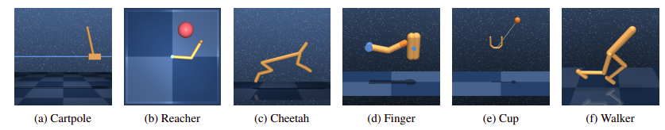
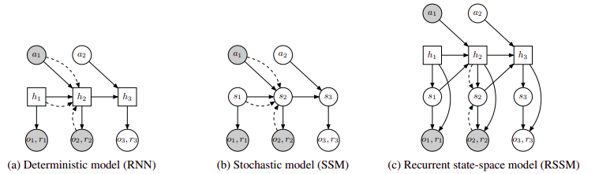
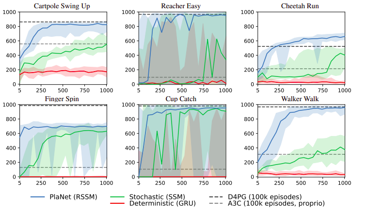
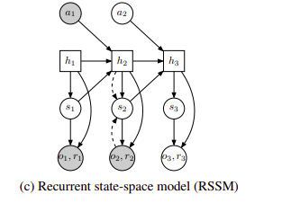

1 When a World Model Isn't Enough
In the last blog, I talked about the World Models paper by Ha and Schmidhuber, where I concluded by pointing out one limitation of their approach. Although the model learns a world model of the environment, the controller does not actually use that world model to plan its actions at inference time. Instead, when the agent is interacting with the environment, the controller takes the current latent state and uses its learned policy to decide which action to take, rather than using the world model to simulate different possible futures and compare the outcomes before deciding what to do.
PlaNet tackles this directly. It is a model-based reinforcement learning method, meaning that instead of only learning which actions to take, the agent also learns a model of how the environment behaves and can use that model to reason about possible future outcomes before acting. That is essentially what makes it model-based rather than model-free. A model-free agent learns which actions to take purely through trial and error, without ever building an explicit model of how the environment works.
Ha and Schmidhuber's World Models can still be considered a model-based approach because the agent learns a model of the environment and uses that learned model during the training of its controller, but the important distinction is what happens when the agent is actually interacting with the environment. The World Models controller uses its learned policy to map the current latent state to an action, whereas PlaNet uses its learned dynamics model to imagine possible future trajectories, evaluate their predicted rewards, and use those predictions to decide which action to take. Unlike approaches that use a separate policy or value network for action selection, PlaNet does not use a policy or value network; instead, it relies on online planning to select its actions.
What I find interesting about this is that the agent is no longer just reacting. It can ask itself what is likely to happen if it takes a particular action, consider different possible action sequences, and then pick the one that looks best based on the outcomes it predicts. All of this planning happens in latent space too, not in pixel space, so the agent never has to reconstruct full images of the future just to decide what to do.
The other advantage is sample efficiency. Because the agent has a model of the environment, it does not have to learn the consequences of every action entirely through real interactions. It can reason about outcomes internally, and the model itself keeps improving as the agent collects more real experience.
The interesting question then becomes how do you build a model that is good enough to predict the future and use those predictions for planning?
That is what I want to explore in this blog. Danijar Hafner and the Google DeepMind team tackled this exact problem. Their approach is noticeably more rigorous and technically dense than Ha and Schmidhuber's World Models, which means understanding PlaNet requires getting directly into the underlying math.

2 Partial Information
POMDP stands for Partially Observable Markov Decision Process, and it is the framework used to formulate the decision-making problem in PlaNet. It is basically a variant of a Markov Decision Process, but the true state of the environment is not directly available to the agent. Instead, at every timestep, the agent receives an observation $o_t$ from the environment, which gives it only partial information about what is happening in the environment.
So the agent cannot just look at what it sees right now and know exactly what state the environment is in. It has to piece that together from the current observation and everything it has seen before, building an internal representation over time. In PlaNet, this internal representation is a latent state that the model can use to reason about what is happening even though the true state is hidden.
This is where the notation in the paper needs to be understood carefully. In the POMDP formulation, the state $s_t$ refers to the true underlying state of the environment, but this state is hidden from the agent. The model therefore has to infer its own latent state from the information available to it. To make this distinction clearer, I will call the model's inferred latent state $\hat{s}_t$. This $\hat{s}_t$ is built from the current observation, previous actions, and the information carried from previous timesteps, rather than being the true state itself.
Once the agent has this latent representation, PlaNet can use its learned dynamics model to imagine what might happen after taking different actions. To search through possible action sequences, it uses an algorithm called the Cross Entropy Method (CEM), which evaluates these imagined trajectories using the learned model's predicted outcomes and rewards. The agent then selects the first action from the sequence that is predicted to perform best, executes it in the real environment, receives a new observation, and repeats the process.
The agent is never handed the true state or told what will happen next. Instead, it has to maintain its own latent representation and use its learned model to reason about what could happen next. This is where the Recurrent State Space Model (RSSM) becomes important, because it is the model PlaNet uses to maintain and predict this latent state, which is what I will be getting into next.
3 Building a Model That Remembers and Imagines
The RSSM is PlaNet's learned dynamics model, and it has both a deterministic and a stochastic component.
Why was this model created?
From Ha and Schmidhuber's model we know they used a recurrent neural network (RNN). The deterministic nature of the RNN was not really a problem for their setup because the controller did not need to compare multiple imagined futures directly when selecting actions at inference time. PlaNet, on the other hand, needs to evaluate different possible futures during online planning, which makes representing uncertainty and multiple possible futures much more important.
The researchers could use a stochastic state space model instead, where the latent state is sampled from a probability distribution, but a purely stochastic model makes it difficult to reliably remember information over multiple timesteps because it does not have a deterministic recurrent component carrying information through time.
I think what the researchers really did here is genius level. They combined the deterministic and stochastic counterparts and called it a Recurrent State Space Model (RSSM). That combination solves two problems at once. The stochastic part lets the model represent multiple possible futures, and the deterministic part lets it hold onto information across many timesteps.

I like to think of the deterministic counterpart as being similar to a Recurrent Neural Network, while the stochastic counterpart is similar to how a variational autoencoder samples a latent variable from a probability distribution. In fact, an encoder is used to infer the stochastic state from the current observation and the deterministic state, while the deterministic component of the RSSM is implemented as a recurrent neural network that carries information from previous timesteps.
I think the RSSM is really the core of PlaNet. It gives the dynamics model both memory and uncertainty, which is exactly what you need if you want to imagine future trajectories and plan over them.
What I found particularly interesting was the result of the different model variants in the experiments. Looking at the results, the ordering was the purely deterministic model first, the purely stochastic model second, and the full RSSM model last, with the RSSM performing the best. From the graph, I also noticed that the stochastic model performed better than the purely deterministic model, which makes the importance of the stochastic component even more interesting when thinking about why PlaNet needs to model multiple possible futures.

How did they combine the components?
At this point, the notation in the paper changes slightly. In the RSSM formulation, the authors use $s_t$ for the stochastic latent state. I will use that notation here, while $\hat{s}_t$ was only introduced earlier to distinguish the model's latent state from the true hidden state of the environment.
The RSSM splits the latent state into two components, the deterministic state $h_t$ and the stochastic state $s_t$. The deterministic state is updated using the previous deterministic state, the previous stochastic state, and the previous action
where $f$ is implemented as a recurrent neural network.
The stochastic state is then sampled from a probability distribution conditioned on the deterministic state
When a real observation $o_t$ is available, an encoder is used to infer an approximate posterior for the stochastic state
So when a real observation comes in, the model can use it to figure out what its current stochastic state should be. During imagination, there is no future observation available, so the model instead uses the learned distribution
to sample the stochastic state and continue predicting the latent dynamics.
The deterministic and stochastic states together form the latent state used by the model, while the observation and reward models use both components to predict the observation and reward
The observation model is mainly used during training, where its predicted observation is compared against the real observation to help train the world model. It is not needed during planning, because PlaNet does not need to reconstruct future pixels in order to evaluate an imagined trajectory. Instead, it can remain entirely in latent space, using the RSSM to predict future latent states and the reward model to predict the rewards associated with them.

Together, that means the RSSM can ground itself in real observations when they are available, and then roll forward on its own when it needs to imagine what happens next.
The paper also explores a technique called latent overshooting. The idea is to train the model not only to predict the latent state at the next timestep, but also to make accurate predictions several steps into the future. This is useful because PlaNet eventually uses the learned dynamics to imagine multi-step trajectories during planning, although the final RSSM based agent did not require it.
4 How the Agent Decides
For the actual planning, PlaNet uses the Cross Entropy Method (CEM).
CEM starts by searching for a good sequence of actions. It proposes several possible action sequences from the current latent state. The RSSM then rolls the latent state forward for each of these sequences, and the reward model predicts the rewards they would produce.
CEM looks at the predicted returns and then uses the better performing sequences to guide the next round of samples. It keeps repeating this process until it has a good estimate of which action sequence is likely to give the highest reward.
The important part is that PlaNet does not actually execute the whole sequence it finds. It only takes the first action and sends it to the real environment. The environment then gives it a new observation and reward, and the agent uses that new information to update its latent state and plan again.
So the planning process is basically the model asking itself what might happen under different actions, choosing the action sequence that looks best, and then checking what happened once the first action is taken in the real environment.
5 Looking Ahead
I would be honest, going through the PlaNet paper was harder for me than the Ha and Schmidhuber paper. I had to read it two times, and I would even say it was a little easier for me because I already knew the theory of variational inference, ELBO, KL divergence, and so on. Even with that background, the hard part was being able to connect all the pieces together. It took me some time, but eventually things started to click.
I am looking forward to reading the Dreamer paper. One limitation of PlaNet is that it is computationally expensive. CEM needs to repeatedly search through many possible action sequences, which makes online planning expensive. Other model-based RL methods like Dreamer approach this differently by learning a policy from imagined trajectories instead of having to perform this kind of search at every decision.
If you spot something I got wrong, I'd genuinely like to hear about it.
References
- Hafner, D., Lillicrap, T., Fischer, I., Villegas, R., Ha, D., Lee, H. and Davidson, J. (2019). Learning Latent Dynamics for Planning from Pixels. arXiv:1811.04551.
- planetrl.github.io — the paper's interactive project page.
- Ha, D. and Schmidhuber, J. (2018). World Models. arXiv:1803.10122.